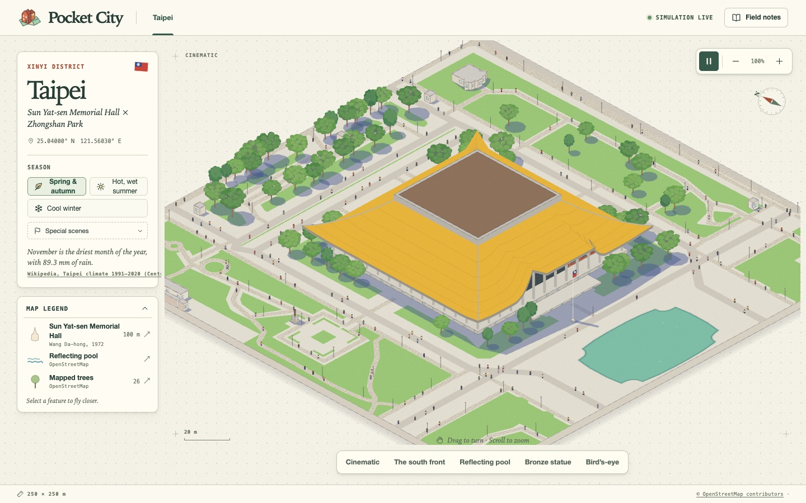

Threads｜Pocket City：以真實地圖構想手繪小城市
一句話摘要
Austin 分享以地址和真實地圖製作手繪小城市的個人案例；作者續文表示追蹤留言後私訊 skill，本次未取得公開技能檔或安裝連結，效果與涵蓋範圍均未獨立實測。
作者展示與取得界線
作者稱展示台北 101、國父紀念館，場景有行人、車輛、季節與降雨，跨年夜台北 101 會放煙火。另一則作者回覆稱全世界都可以；這是作者說法，不代表全球地址都能成功重建或地圖完整。
作者本人續文明確寫「追蹤留言我會私訊你skill」；目前可見內容未提供公開下載網址、原始碼、授權、執行環境或費用。未留言、追蹤、私訊、安裝或測試，也不推測技能連結。不能由未找到公開連結推論其不存在。
原帖圖片

原帖第二格公開圖顯示 Pocket City、國父紀念館、季節選項及 OpenStreetMap 標示；圖片來源 Austin 的 Threads，重用授權未確認。畫面為作者示例，不證明後端如何取得資料或每種地址均能正確繪製。第一格為影片；本次未觀看完整影片，不將首格當完整證據。
地圖資料與風險
圖例將映照池、樹木標為 OpenStreetMap，頁尾也標示 OpenStreetMap contributors；這是畫面所示來源，不能據此斷言所有建築、氣候、動態或地址查詢均由 OSM 提供，也未證實採用何種地理編碼服務。
OSM 官方說明，地圖資料採 ODbL，使用時須依用途適當標示來源與資料授權；衍生資料庫的相同方式分享義務須依實際使用與授權條款評估，不等同所有圖像一律開源。地圖底圖、外部素材及 skill 本身可能另有權利限制。
作為一般選項，OSMF 公用 Nominatim 的政策限每個應用程式總量最高每秒一個請求、須識別應用與標示來源，禁止自動補全及系統性查詢；不得將敏感或個人資料送入服務。這只是一般政策參考，並非此案例已使用 Nominatim 的證據。
地址可能揭露住家或個人行蹤；先以公開地標或低敏感地點測試，確認資料流、服務留存與分享設定。地圖可能過時或不完整，生成場景也可能藝術化或虛構，不宜作導航、緊急應變或敏感設施細節依據。未知 skill 在執行前應審核程式、網路連線、檔案權限與費用，並使用隔離環境。
原始與查核連結
- 使用者分享：https://www.threads.com/share/__poiEb5x
- 原帖：https://www.threads.com/@ai_cpocoder/post/DgAIaT7H6bi
- 作者續文：https://www.threads.com/@ai_cpocoder/post/DgAKXMNn9TI
- OSM 資料與授權：https://www.openstreetmap.org/copyright
- 公用 Nominatim 政策：https://operations.osmfoundation.org/policies/nominatim/
查核日期：2026-11-22。未登入或實測，留言僅限本次可公開載入部分。